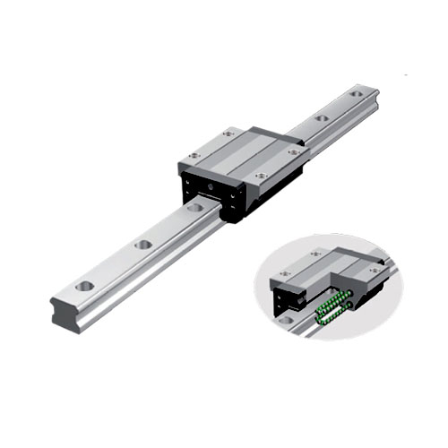
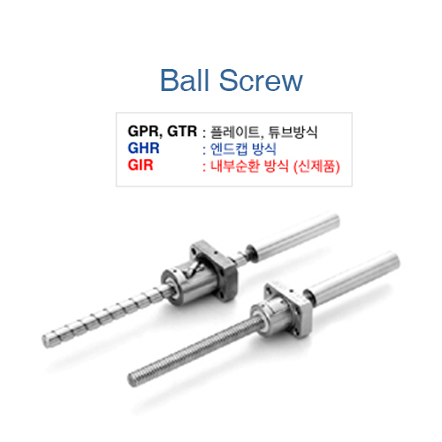
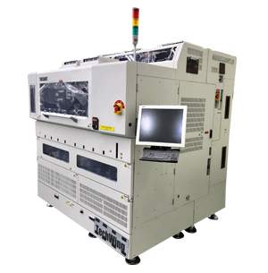

LM GUIDE
직선운동 가이드레일과 블록을 통해 하중을 지지하면서 직선운동을 안내하는 부품입니다. 장비의 이송·위치결정 기구에 사용됩니다.
제품 자료 보기 ↗GF · GOOD FRIENDS
반도체 장비용 기계부품
전문 공급 · 고객 맞춤 가공
제품 선정부터 원장 절단과 그리스 교체까지.
설비에 필요한 부품을, 필요한 사양에 맞춰 공급합니다.

COMPANY
부품을 이해하는 공급 파트너지에프는 직선운동 부품을 중심으로
반도체 장비에 필요한 기계부품을 공급합니다.
삼익THK·햅코모션·삼익정공 대리점으로서 제품 공급과 고객 맞춤 작업을 함께 수행합니다. 주요 고객사인 테크윙을 비롯한 반도체 관련 설비업체의 부품 수요에 대응합니다.
기성품의 전달에 그치지 않고, 재료 원장을 구매한 뒤 절단·가공·그리스 교체 등 고객 요구에 맞춘 작업을 거쳐 사용할 제품을 제작·납품합니다.
“어떤 부품이 필요한가”에서
“어떤 사양으로 사용할 것인가”까지.
삼익THK 대리점 개설
김태성 대표이사로 대표자 변경
연혁: 기존 회사소개서 기준. 인력·보유 설비·사업 내용: 회사 제공 정보. 1999년은 대리점 개설 연도이며 법인등기상 설립일과 구분합니다.
PRODUCTS
직선운동 부품의 두 축레일과 블록을 통해 하중을 지지하면서 직선운동을 안내하는 부품입니다. 장비의 이송·위치결정 기구에 사용됩니다.
제품 자료 보기 ↗
나사축과 너트 사이의 볼을 이용해 회전운동과 직선운동을 변환하는 부품입니다. 이송축의 구동·위치결정에 사용됩니다.
제품 자료 보기 ↗사진은 제품군을 설명하기 위한 공식 카탈로그 이미지입니다. 주문별 모델·길이·정밀도·윤활 사양 및 공급 범위는 별도 협의합니다.
SUPPLY PORTFOLIO
브랜드 전문성과 폭넓은 품목 대응SAMICK THK
LM가이드·볼스크루 등 직선운동 관련 제품 공급. 내열·내식·저발진 등 사용 환경에 따른 LM류 상담을 소개하고 있습니다.
대리점HEPCO MOTION
트랙 롤러 가이드 방식의 LM 시스템. 직선과 곡선 구동을 위한 제품 검토와 사양 상담에 대응합니다.
대리점삼익정공
고객의 기계부품 수요에 대응하는 대리점 공급 체계. 구체적인 품목과 공급 조건은 상담을 통해 확인합니다.
대리점볼스플라인 · 크로스롤러 가이드/테이블 · 볼부시 · 리드스크루 · 서포트 유닛 · 커플링 · LM 액추에이터 · 감속기 · 구름베어링
IVAC korea의 진공발생기·비접촉식 흡착기·반도체 장치용 진공흡착 유닛, 한산–ISSOKU 및 NB·IKO·NSK 등 LM SYSTEM류.
주요 3개 대리점 관계는 회사 제공 정보입니다. 추가 포트폴리오는 기존 회사소개서에 기재된 범위이며, 현재 개별 품목의 공급 가능 여부·납기·계약 범위는 문의 시 확인합니다.
CUSTOMER-SPECIFIC SERVICE
공급과 맞춤 작업을 하나의 흐름으로삼익THK 재료 원장의 구매와 절단,
고객 요구에 따른 가공·그리스 교체 및 제품 공급.
사용 제품과 규격,
요청 작업 범위를 협의합니다.
필요한 제품 또는
작업할 재료 원장을 구매합니다.
절단·가공·그리스 교체 등
요구한 작업을 수행합니다.
업체가 사용할 사양에 맞춰
제품을 제작·납품합니다.
OUR OPERATING BASE
직원 5명 · 절단기 1대
전문 부품 공급과 고객 사양 대응에 집중합니다.
BEFORE YOUR ORDER
제품 형번 · 필요 길이 · 사용 환경 · 윤활 조건
가공 범위와 납기는 개별 협의합니다.
회사 설명을 기반으로 구성한 서비스 흐름입니다. 절단 외 가공의 직접 수행·협력업체 활용 범위는 작업별 확인 사항이며, 미확인 설비나 검사·인증 역량을 전제하지 않습니다.
CUSTOMER & APPLICATION
반도체 장비 부품의 공급 현장TECHWING 테크윙
지에프의 주요 고객사
지에프는 테크윙의 반도체 핸들러를 비롯해 반도체 관련 설비에 들어가는 기계부품류를 공급합니다.
테크윙은 공식 홈페이지에서 Memory Test Handler 제품군을 소개합니다. 대표 모델 TW350HT는 BGA·TSOP·CSP·MCP·POP 등의 패키지를 대상으로 하는 장비입니다.
테크윙 공식 제품 자료 ↗기존 지에프 소개서의 적용 산업
반도체 · 디스플레이 · 이차전지 · 자동차

고객사 장비 예시입니다. 지에프의 보유 설비가 아니며,
이 모델에 대한 개별 부품 납품 여부를 의미하지 않습니다.
테크윙 거래 관계·지에프 공급 내용은 회사 제공 정보입니다. 장비 설명·이미지는 테크윙 공식 자료를 인용했으며, 독점 공급·거래 규모·공동 인증을 뜻하지 않습니다.
BUSINESS PERFORMANCE
공급가액 기준 · 부가세 제외| 구분 | 집계 기간 | 매출액 · 공급가액 |
|---|---|---|
| 2023년 연간 | 2023.01.01–12.31 | 1,876,663,860원 |
| 2024년 연간 | 2024.01.01–12.31 | 2,569,369,400원 |
| 2025년 연간 | 2025.01.01–12.31 | 2,899,343,360원 |
| 2026년 누적 | 2026.01.01–09.16 | 2,791,661,120원 |
출처: 회사 제공 매출 집계자료. 부가세 제외 공급가액 기준. 증가율은 원 단위 실적으로 계산 후 소수 첫째 자리 반올림. 감사·결산 확정 재무제표를 의미하지 않으며, 수익성·부채·현금흐름에 대한 판단은 포함하지 않습니다.
GOOD FRIENDS, GF
문의 · 제품 및 사양 상담필요한 제품 형번과 규격, 사용 환경을 알려주세요.
지에프가 공급과 맞춤 작업 범위를 함께 협의합니다.
REFERENCE NOTES
자료의 범위와 출처제품 이미지의 권리는 각 권리자에게 있습니다. 지에프 홈페이지 및 테크윙 공식 자료를 출처와 함께 인용했습니다. 원본 기술 형상은 임의로 생성하거나 변경하지 않았습니다.
공개 자료의 확인 기준일은 2026년 9월 16일입니다. 제품 사양·공급 가능 여부·가공 범위·납기는 문의 시 확인합니다.
제품 분류·공개 연락처
사업 소개·Good Friends·연혁
LM가이드 제품 이미지
볼스크루 제품 이미지
Memory Test Handler 설명·이미지
본 소개서는 회사 및 제품·서비스를 설명하기 위한 자료입니다. 미확인 인증·생산능력·독점 계약·실적 전망은 포함하지 않았습니다.